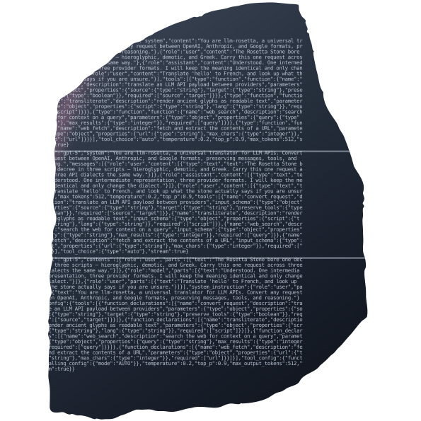

Same stone, same real convert() inscription — four typeface trios for the three scripts (OpenAI / Anthropic / Google). Top row = at-size; bottom = zoomed to read the three distinct "scripts". Which trio reads best?
JetBrains · IBM Plex · Space Mono (geometric / humanist / retro)

Fira Code · Inconsolata · Victor Mono (ligature / classic / script-italic)
JetBrains Mono · Spectral · Inter (mono / serif / sans)
Red Hat Mono · IBM Plex · Space Mono